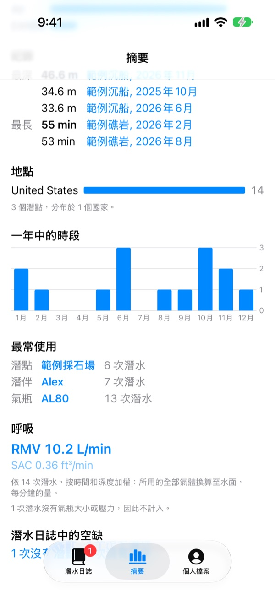

首先，更新每台裝置
當每台裝置都執行最新版本時，許多問題就會消失。在你使用的每台 iPhone、iPad 和 Mac 上打開 TestFlight，安裝所有更新。較舊的版本在更新之前會停止傳送變更，並提示更新 Thermocline 以繼續同步。你的變更會保留，並在更新後傳送。
從潛水電腦下載
找不到潛水電腦
- 喚醒潛水電腦，讓它進入藍牙模式（Shearwater：Menu → Bluetooth）。它只會在該模式下保持大約兩分鐘。
- 讓它靠近 iPhone、iPad 或 Mac。
- Shearwater 潛水電腦會回到它上次使用的裝置。如果你的手機或另一台 Mac 在附近，請在那台裝置上關閉藍牙，然後重試。
- 檢查藍牙是否已開啟，以及是否允許 Thermocline 使用藍牙（iPhone：設定 → Thermocline；Mac：系統設定 → 隱私權與安全性 → 藍牙）。
是 Predator 或 Petrel 1，iPhone 找不到它
它們使用 iPhone 和 iPad 無法使用的較早藍牙（經典藍牙）。請在 Mac 上下載（請參閱指南），或從 Shearwater Cloud 或 UDDF 檔案輸入它們的潛水。
已連接，但要求輸入 PIN 碼
輸入潛水電腦螢幕上顯示的代碼。只有第一次需要。
「沒有新的潛水」
只會取得比你上次下載更新的潛水。如果你刪除了一次潛水並想找回來，請開啟下載電腦上的每一次潛水，然後再次下載。已在你潛水日誌中的潛水會被略過。
下載中途停止
選擇保留以儲存已傳來的潛水，然後再次下載其餘潛水。如果總是停止，請在靠近潛水電腦的地方選擇再試一次，並傳送下載記錄。
Mac 上的傳輸線下載失敗
- 檢查連接埠是否與傳輸線相符：清單會註明每個連接埠的類型，並在連接埠不適用於你所選型號時發出提醒。
- 拔下傳輸線再重新插上，然後使用重新整理按鈕重新尋找傳輸線。
- 按照你的型號的開始之前步驟操作。
- 傳輸線下載是新功能。無論成功與否，都請傳送下載記錄。
裝置之間的同步
我的 iPhone App 顯示 Thermocline 現在是一個 App，或者我看到兩個 Thermocline App
2026年11月18日，iPhone、iPad、Mac 和 Apple Watch App 合併為一個 App，使用同一個測試版連結。你之前的 iPhone App 現在只用於幫你遷移。
- 打開舊的 App。如果它顯示同步已關閉，請點一下開啟「與 iCloud 同步」並讓它保持打開一分鐘，或者點一下將我的潛水日誌匯出為 UDDF並儲存該檔案。
- 點一下加入新的 Beta 版，或在你的 iPhone 上打開測試版連結，然後安裝新的 App。它會和舊的 App 並存。
- 在新的 App 中，開啟個人檔案 → 與 iCloud 同步。你的潛水、潛點、裝備和設定都會回來。如果你選擇的是輸出，請使用個人檔案 → 輸入潛水日誌檔案。
- 你可能需要重新配對潛水電腦，並透過 iPhone 上的 Apple Watch App 重新安裝手錶 App。
- 當新的 App 顯示相同的潛水後，刪除舊的 App。
在 Mac 上，什麼都不變：照常更新 Mac App 即可。
同步後潛水遺失或重複
- 先不要變更任何內容。在每台裝置上擷取「同步」部分的畫面（iPhone：個人檔案 → 同步；Mac：Thermocline → 設定 → 同步）並傳送。
- 檢查每台裝置是否都是最新版本。
- 個人檔案 → 你的資料 → 還原點可以把你的潛水日誌帶回輸入、合併或刪除之前。還原時會先儲存你當前的潛水日誌，因此可以還原。
在一台裝置上的變更沒有出現在另一台裝置上
- 檢查兩台裝置上是否都已開啟與 iCloud 同步，並登入了同一個 Apple帳號。
- 查看你做出變更的那台裝置上的等待傳送，並在兩台裝置都有訊號時打開 App。「同步」部分會顯示此裝置與你的其他裝置何時一致。
- 按下立即同步。
「未登入 iCloud」
在裝置的「設定」中登入 iCloud。在此之前，你的潛水日誌會安全地保留在該裝置上，登入後即會同步。
「你的 iCloud 儲存空間已滿」
你的潛水日誌在裝置上是安全的，有空間時會同步。請釋放一些 iCloud 空間，或開啟節省潛水照片佔用的 iCloud 儲存空間，這樣照片就不會儲存兩份。
「另一台裝置使用的是較新版本」
在 TestFlight 中更新此裝置上的 Thermocline。你的變更在這裡是安全的，並會在更新後傳送。
輸入
有些潛水或細節沒有輸入
輸入報告會在未輸入和請檢查下列出所有內容，並附上原因。每種潛水日誌寫入 UDDF 的方式都略有不同，因此缺少某些數值是正常的，它們會保持空白。如果你預期的內容缺失，請傳送該報告，如果可以的話，也請傳送該檔案。
我的 MacDive 裝備、照片或潛水類型缺失
MacDive 的 UDDF 輸出不包含這些內容。在其上輸入它的 XML 以取得裝備、標籤和潛水類型，並在 Mac 上輸入 MacDive 的檔案夾以取得照片。已在你潛水日誌中的潛水不會被加入兩次。請參閱選擇哪個 MacDive 檔案。
來自 MacDive 的潛水缺少 NDL、ppO₂ 或 CNS
潛水頁面上 NDL 顯示為「—」，減壓顯示為「未記錄」，或 ppO₂ 顯示「根據氣體和深度計算」。MacDive 的 UDDF 輸出不包含潛水電腦的 NDL、ppO₂ 或 CNS。對於 MacDive 在 iPhone 或 iPad 上下載的潛水，它的檔案夾中沒有潛水曲線，因為它會加密儲存這些潛水。
也輸入 MacDive 的 XML：它會補齊缺少的內容，而不會重複加入潛水。請參閱選擇哪個 MacDive 檔案。
在檔案或 App 之間遷移會遺失內容嗎？
- 你的原始檔案絕不會被變更。請保留你的 MacDive 輸出檔案，並在比較過幾次潛水之前保留 MacDive 本身。
- 第二次輸入只會加入，不會替換。已在你潛水日誌中的潛水會被比對，只會補上它們缺少的內容，因此你可以在 UDDF 之後輸入 XML，或在兩者之一之後輸入檔案夾。
- 你可以回到之前的狀態。在任何包含多次潛水的輸入之前，都會儲存一個名為輸入之前的還原點（iPhone 上為個人檔案 → 你的資料 → 還原點，Mac 上為設定 → 還原點）。在 Mac 上，報告中的還原輸入⋯也可以撤回輸入。
- 離開 Thermocline：它的 UDDF 輸出是完整的輸出。其中包括每次潛水過程中潛水電腦的 NDL、ppO₂ 和 CNS，以及裝備、標籤、潛水類型和影片連結。照片不包含在任何輸出檔案中。
輸入的潛水沒有氣體
檔案中沒有註明使用了哪種氣體。這些潛水會在待確認中等待，以便你設定氣體。
我輸入了錯誤的檔案
在 Mac 上，使用輸入報告中的還原輸入⋯。在任一裝置上，任何包含多次潛水的輸入之前都會儲存一個名為輸入之前的還原點。
Garmin 檔案無法輸入
- 「這是 zip 檔案」：Garmin Connect 的 匯出原始檔案 會產生一個 .zip 檔案。請先解壓縮，然後選擇其中的 .fit 檔案。
- 「這不是 Garmin FIT 檔案」：該檔案不是來自 Garmin 手錶，或者只是檔名以 .fit 結尾。請使用手錶 GARMIN → Activity 檔案夾中的檔案，或使用 匯出原始檔案。
- 「Garmin 檔案中沒有潛水」：跑步、步行、設定和健康檔案會被略過。只有潛水會被輸入。
- 「似乎不完整或已損壞」：檔案在中途中斷，通常是因為拷貝或下載沒有完成。能讀取的內容會顯示出來；請從手錶重新拷貝該檔案並重新輸入，以取得其餘部分。已在你潛水日誌中的潛水會被略過。
- 將 Garmin 檔案與其他潛水日誌檔案一起選擇無法一次完成：請先輸入潛水日誌檔案，再輸入 Garmin 檔案。
Garmin 潛水要求我檢查氣瓶
有多個氣壓發射器時，Garmin 的檔案不會註明每個發射器對應哪種氣體，因此它們會依序比對到該潛水的氣瓶。請打開該潛水的氣體部分，確保每個壓力都對應正確的氣瓶。
Garmin 潛水的時間差了一小時
時間來自手錶的時鐘。如果手錶沒有設定為你潛水地點的當地時間，潛水就會顯示手錶的時間。請編輯潛水的時間，或在下次出行前設定手錶的時區。
放流潛水的潛點不對
潛水會比對到入水點和出水點中較近的那個潛點，放流潛水時通常是你入水的位置。如果比對到錯誤的潛點或沒有比對到潛點，請在該潛水上選擇潛點，並把途經的其他沉船加入到備註中。
氣體消耗和 SAC
某個 SAC 數字看起來不對
點一下或按一下旁邊的怎麼算？。它會顯示每一項輸入：氣瓶及其水容積、壓力、溫度、真實氣體修正、時間和深度。最常見的原因是氣瓶容量錯誤；請在「裝備」中修正。如果仍然看起來不對，請傳送「怎麼算？」畫面的截圖。

沒有 SAC，只有一條訊息
- 加入氣瓶容量以查看 SAC：選擇氣瓶的型號或輸入其容量。
- 加入起始和結束壓力以查看 SAC：沒有氣壓發射器，因此請在氣瓶上輸入壓力。
- SAC 需要潛水曲線：手動記錄且沒有曲線的潛水沒有 SAC。
- 循環呼吸器潛水不會有 SAC 數字。
SAC 只計算了一個氣瓶
在使用多種氣體的潛水中，只有帶氣壓發射器的氣瓶有壓力資料。在另一個氣瓶上輸入起始和結束壓力，SAC 就會涵蓋所有氣體。
「摘要」中的「呼吸」顯示沒有潛水具有氣瓶容量
「呼吸」只對具有氣瓶容量以及起始和結束壓力的潛水取平均值。來自 MacDive UDDF 的潛水沒有氣瓶容量，因為它的容量不是水容積；在其上輸入 XML 可以補齊（請參閱選擇哪個 MacDive 檔案）。否則，請在你的潛水上設定氣瓶（選擇其型號或裝備組合），並在有資料時加入壓力。在數字下方，「呼吸」會顯示有多少次潛水未被計入。

照片
照片沒有出現在我的另一台裝置上
開啟節省潛水照片佔用的 iCloud 儲存空間後，照片會保留其副本，直到你的另一台裝置在 iCloud照片中找到它。請在兩台裝置上都開啟此設定，檢查兩台裝置都已開啟 iCloud照片，並給它一些時間上傳。
影片沒有加入
圖庫中的影片只能連結，不能拷貝。請開啟同步 → 節省潛水照片佔用的 iCloud 儲存空間，並確保該影片在 iCloud照片中。或者在潛水的照片下方貼上 YouTube 或 Vimeo 連結。
「Thermocline 無法讀取你的照片」
照片取用被拒絕，因此照片會被拷貝而不是連結。要連結照片，請在「設定」→「隱私權與安全性」→「照片」→「Thermocline」中允許取用。
潛點和 Apple Watch
推薦的潛點不對，或者沒有推薦
選擇其他潛點，依名稱搜尋內建清單，或者自己標記或輸入位置。內陸採石場和湖泊在公開清單中經常缺失，因此此後你自己的潛點會在推薦中排在最前。
我的 Apple Watch 上沒有 Thermocline
手錶 App 隨 TestFlight 中的 iPhone App 一起提供。在你的 iPhone 上打開 Apple Watch App，在可用App下找到 Thermocline，然後點一下安裝。它需要 watchOS 11 或更高版本。如果你是從舊的 iPhone App 遷移過來的，請重新安裝：舊的手錶 App 屬於舊的 iPhone App。
手錶顯示「正在等待良好的定位」，「標記地點」一直是灰色
只有誤差在 ±30 m 以內、且在最近 30 秒內取得的定位才會儲存位置，因此錯誤的位置絕不會進入你的潛水日誌。請留在水面，讓手錶露出水面並能清楚看到天空，然後等一分鐘。忽略舊的快取位置表示它在等待新的定位。GPS 在水下無法使用：請在下潛之前或出水時標記地點。
手錶上顯示「Thermocline 的定位服務已關閉」
在手錶上，打開設定 → 隱私權與安全性 → 定位服務，開啟「定位服務」，並允許 Thermocline 在使用 App 期間取用。
在手錶上標記的位置沒有出現在 iPhone 上
在手錶上打開已標記的地點。等待傳送到 iPhone表示 iPhone 還沒有收到：請讓手錶靠近你的 iPhone，並在 iPhone 上打開 Thermocline。已傳送到 iPhone表示它已在那裡：請查看潛水日誌 → 待確認。iPhone 連網時才會查詢該位置，因此沒有訊號時，它會顯示等待訊號以查詢並等待。
我標記地點後，手錶沒有顯示潛點名稱
名稱來自你的 iPhone：當 iPhone 在附近且 Thermocline 能夠回應時，手錶會在位置下方顯示它將推薦的潛點（你的潛點或潛點清單中的潛點）以及距離。當 iPhone 不在範圍內時，手錶會根據 iPhone 留在手錶上的副本顯示你自己潛點的名稱，但不包括潛點清單。如果大約 1.5 km 內沒有潛點，該位置會在沒有名稱的情況下標記。無論哪種情況，你都在 iPhone 上的潛水日誌 → 待確認中選擇潛點。
我在手錶上說出的名稱沒有儲存
名稱會在聽寫或鍵盤關閉時，或在你返回時儲存。打開已標記的地點，點一下該位置並檢查其名稱；點一下更改名稱再試一次。如果該位置已經傳送，名稱會隨之同步到 iPhone。
手錶會記錄我的潛水嗎？
不會。Thermocline 手錶 App 只在水面標記地點。你的潛水來自你的潛水電腦。對於 Garmin Descent 手錶，請輸入它們的 .fit 檔案：請參閱指南中的Garmin Descent。
一個位置從手錶上消失了
這是正常的。位置在 iPhone 上被確認或放棄後，就會從手錶上移除。已確認的位置會成為你潛水日誌中的一個潛點，並同步到你的其他裝置。
傳送報告或下載記錄
- 從 App 傳送：截圖，然後在 TestFlight 中使用分享Beta版使用者意見。意見回饋送達時會附帶版本號和裝置資訊。
- 下載記錄，iPhone：在下載畫面上點一下下載記錄，然後分享。它只列出藍牙和潛水電腦的訊息，不含任何潛水資料。
- 下載記錄，Mac：在下載視窗中選擇下載記錄⋯，然後選擇儲存記錄⋯，並附上該檔案。
- 電子郵件：brian@616labs.net，請寫明你的裝置、版本號（顯示在 TestFlight 中）以及你預期會發生什麼。